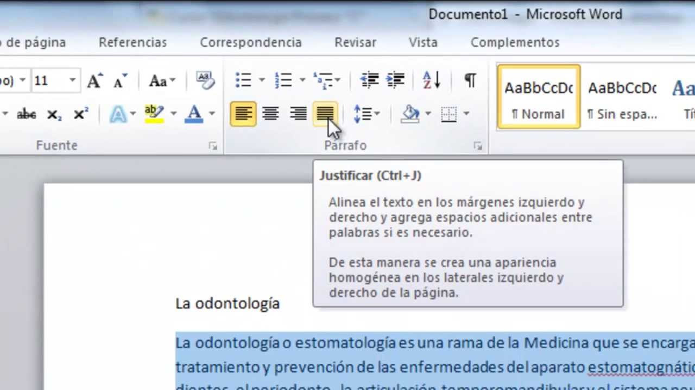

¿Que es una Alineacion?
La alineación de un texto se usa para acomodar las palabras y los párrafos de acuerdo con un orden lógico. De esta manera se logra que la redacción presente un aspecto prolijo y sea agradable a la lectura.
Tipos de Alineaciones
Izquierda:
Se puede alinear todo el contenido al margen izquierdo de la hoja de esta manera facilita la lectura del documento.
Centrado:
Utiliza ambos márgenes de la hoja y centra todo el párrafo o texto de acuerdo con el espacio usado. De esta manera podrás ver que el centro de la hoja será el eje de simetría.
Derecha:
Es igual a la primera alineación que hemos nombrado, pero se justifica para la derecha. A este tipo de justificación lo podrás usar para secciones pequeñas de contenido, por ejemplo, cuando necesites hacer un encabezado o pie de página.
Justificada:
La alineación que utilizarás con este tipo de justificación es simétrica tanto para el margen izquierdo como derecho. Con esto podrás encontrar un texto prolijo de ambos lados, siendo muy útil para usar en redacciones para diarios o revistas en donde se necesite respetar columnas.
¿Como ajustar la alineación en texto?
Lo primero que debes hacer es seleccionar el texto que quieres justificar por medio de una alineación y luego seguir estos pasos:
Busca la pestaña “Inicio”.
Dirígete al grupo “Párrafo”.
Haz click en las diferentes aplicaciones que tienes disponibles. Las mismas cuentan con un icono de 4 líneas horizontales que tienen una alineación a la izquierda, al centro, a la derecha y justificada.
